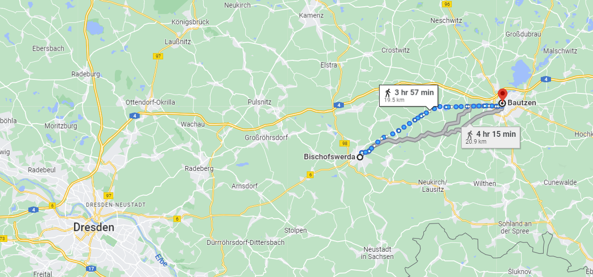
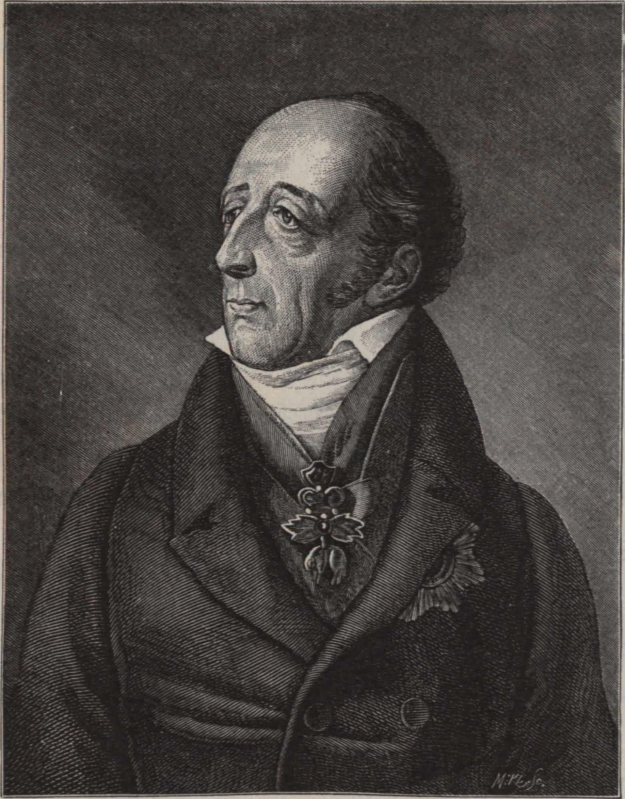
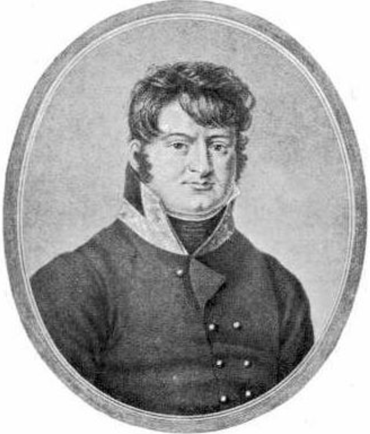
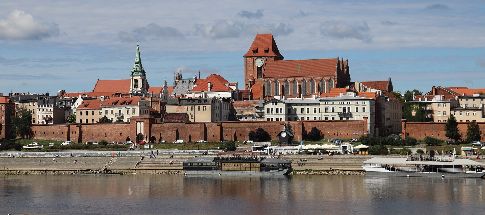
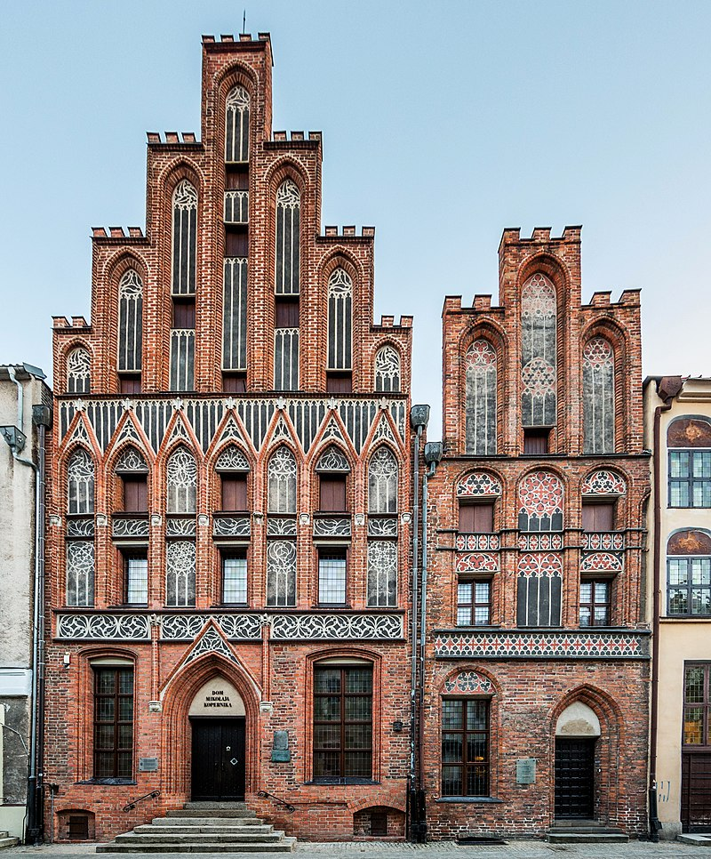
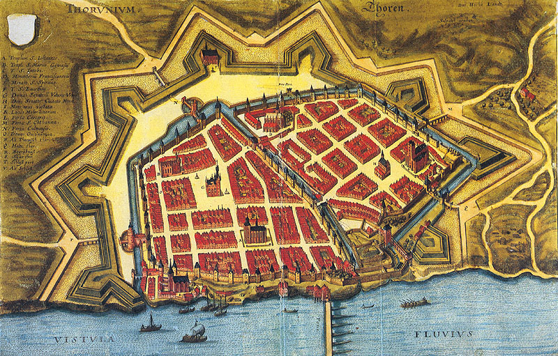

바우첸을 향하여 (8) - 등 떠밀려 결정된 싸움터
게시: 2023-01-30T06:30:08+09:00
엘베 강변에서 연합군이 후퇴한 경위를 대충 들어보면 결국 비트겐슈타인이 지나치게 소극적이어서 후퇴했다는 이야기로 들릴 수 있지만, 비트겐슈타인의 입장은 다소 달랐습니다. 그의 생각에 따르면 프랑스군이 엘베 강을 비텐베르크와 벨게른 등 훨씬 남쪽에서 분산 도강할 것이니 그들이 도착하기 전에 프로이센군과 러시아군을 다시 합세시켜, 나폴레옹에게 일격을 먹이겠다는 심산이었습니다. 즉 아군은 집결되고 적군은 분산된 상태로 싸우겠다는 것이었습니다. 그러나 어디서 그러는 것이 좋을까요? 연합군의 후퇴 동선을 보면 프로이센군의 경로는 약간 남동쪽으로, 러시아군의 경로는 약간 북동쪽으로 기울어져 있어서, 이들이 계속 동쪽으로 이동하다보면 결국 이들은 만나게 되어 있었습니다. 대충 그 위치는 바우첸(Bautzen)이었습니다.

(바우첸은 러시아군의 목적지인 비숍스베르다에서 다시 20km 정도 이동하면 나오는 도시입니다.) 비트겐슈타인이 바우첸을 결전의 장소로 고른 것은 나름 이유가 있었습니다. 먼저 프로이센군과 러시아군 각각의 후퇴 동선을 고려해보면, 이미 언급한 것처럼 엘베 강에서 각각 따로 후퇴한 이후 가장 빨리 재합류하여 다시 한번 전투를 벌일 수 있는 장소가 바우첸이었습니다. 그러니까 원래 엘베 강변에서 나폴레옹을 막으려 했지만 그게 안 되니 차선책으로 허겁지겁 고른 곳이라는 뜻이었습니다. 그러나 바우첸의 지형이나 위치가 연합군에게 그다지 나쁘지 않은 곳이긴 했습니다.
하지만 그런 전술적인 것보다 더 중요한 문제가 있었습니다. 오스트리아였습니다. 러시아나 프로이센이나 자신들만으로 나폴레옹을 패배시키는 것은 어렵다는 것을 절실히 깨닫고 있었습니다. 그들은 외교력을 총동원하여 오스트리아를 연합군에 끌어들이려 노력하고 있었고, 그래서 샤른호스트까지 빈으로 보낸 상태였습니다. 그러나 오스트리아의 참전을 위해서는 외교관들의 미사여구가 아니라 연합군이 이길 수 있다는 것을 입증하는 승전보가 필요했습니다. 그런 상황에서 벌어진 뤼첸에서의 패배는 연합군에게 병력 손실이나 라이프치히 및 드레스덴 등 주요 작센 왕국의 도시들을 상실한 것보다 외교적인 측면에서 더 큰 타격을 주었습니다. 가짜 뉴스의 귀재인 나폴레옹은 이미 뤼첸에서의 승리를 실제보다 10배는 부풀려 이스탄불까지 떠들썩한 승전보를 뿌리고 있었습니다. 이에 대응하기 위해서라도 비트겐슈타인은 하루라도 더 빨리, 조금이라도 더 물러서지 않은 채로 전투를 재개해야 했습니다. 알렉산드르와 프리드리히 빌헬름도 어서 싸우라는 무언의 압력을 비트겐슈타인에게 끊임없이 보내오고 있었습니다.
무엇보다 당장 연합군 진영에는 오스트리아의 사절 스타디온(Johann Philipp Stadion) 백작이 찾아와 오스트리아의 참전에 대한 매우 진지한 이야기를 나누고 있었습니다. 아마 나폴레옹 전쟁 약 20년 동안 이때만큼 오스트리아의 위상이 높았던 때가 없었을 것입니다. 프로이센의 총리 하르덴베르크와 러시아의 외무부 장관 네셀로더(Karl Vasilyevich Nesselrode)가 함께 5월 13일 괴를리츠(Görlitz)에서 스타디온과 만나 오스트리아의 참전을 확실히 하기 위해 애를 태웠습니다. 원래 철저한 보수주의자이자 반나폴레옹파였던 스타디온은 매우 자신감 넘치는 태도로 오스트리아의 참전을 약속했는데, 다만 여러가지 조건을 내세웠습니다. 그 결과, 스타디온이 부어쉔(Wurschen)에서 짜르 알렉산드르와 프로이센 국왕 프리드리히 빌헬름을 연달아 만난 뒤 작성된 부어쉔 조약 제1조는 오스트리아에게 1805년 이후 입었던 모든 물적 영토적 인구적 손해를 원상복구시켜준다는 약속이었습니다.

(스타디온(Johann Philipp Stadion, Count von Warthausen) 백작입니다. 전통적인 독일 귀족 집안에 태어난 그는 나폴레옹보다 6살 연상이었고 24세의 나이로 주스웨덴 대사부터 시작하여 대부분의 활동을 외교관으로 보냈습니다. 1805년 아우스테를리츠의 패전으로 이어진 제3차 대불동맹전쟁도 그가 주도한 오스트리아-러시아 동맹에서 시작될 정도로 그는 보수파이자 강경파였습니다. 그는 그 패전에도 굴하지 않고 다시 제4차 대불동맹전쟁을 주도하여 바그람의 패배로 오스트리아를 몰아 넣었는데, 이 패배 뒤에는 결국 외무장관직을 주프랑스 대사였던 메테르니히에게 넘겨주어야 했습니다. 그러나 그는 계속 대프랑스 강경파였고, 종전 이후에는 전쟁으로 피폐된 오스트리아 제국의 재무적 안정을 위해 1816년 오스트리아 최초의 중앙은행을 창립한 주체이기도 했습니다.) 그렇게 유세를 떨던 스타디온에 대해 당시 주프로이센 영국 대사 자격으로 현장에 있던 스튜어트(Charles William Stewart) 장군이 남긴 기록이 있습니다. 그에 따르면 스타디온은 연합군이 뤼첸 전투 이후 엘베 강을 건너 후퇴해야 했던 것에 대해 매우 아쉬워 하며 당장 다시 싸워야 한다고 적극 주장했는데, 스튜어트가 보기에는 연합군이 더 많이 싸울 수록 오스트리아에게 더 유리하다고 여기는 것 같았습니다. 그야말로 오스트리아가 참전하기 전에 프랑스-러시아-프로이센이 죽도록 싸워 조금이라도 더 피를 흘려 두기를 바라는 것이었습니다. 한편, 위에서 언급한 부어쉔 조약은 당연히 나폴레옹의 패배를 기본 전제로 깐 것이었습니다만, 그 조약 어디에서도 프랑스 제국의 해체 같은 것은 언급되어 있지 않다는 것이 특징이라면 특징이었습니다. 이때만 해도, 알렉산드르도 프란츠 1세도 나폴레옹의 폐위 같은 것은 전혀 생각하고 있지 않았으며, 그들이 원하는 것은 라인 연방을 해체하여 독일에 대한 프랑스의 지배를 종식시키고 이탈리아, 네덜란드, 스페인 등도 프랑스의 압제에서 해방시킨다는 것 정도였습니다. 즉 나폴레옹이 가져온 유럽의 새 질서를 허물고 옛 체제로 되돌아가는 것이 목표였습니다. 이건 연합국들이 나폴레옹을 아직까지는 대화 상대로 여기고 있었다는 뜻입니다. 실제로 이때만 해도 오스트리아의 공식적인 입장은 연합국 측에 가담하여 나폴레옹을 박살낸다는 것이 아니었습니다. 오스트리아는 나폴레옹과 혼인으로 동맹을 맺은 제국이었으며, 좋았던 옛 시절로 돌아갈 수 있다면 굳이 피를 흘리며, 무엇보다도 돈을 써가며 싸우고 싶은 생각은 없었습니다. 오스트리아의 외무장관인 메테르니히는 오스트리아의 역할을 무장한 중재자로 규정했고, 가급적이면 나폴레옹이 러시아-프로이센과 적당한 선에서 타협하여 평화 조약을 맺도록 유도하는 것을 목표로 했습니다. 물론 중재자로서 중요한 역할을 한 오스트리아에게 큼직한 떡고물이 떨어지기를 원했지요. 메테르니히는 당시 아직 드레스덴에 있던 나폴레옹에게는 비교적 진보파이자 화친파 인물이었던 부브나 장군을 보내 오스트리아의 중재안을 받아들이기를 종용했습니다.

(부브나(Ferdinand, Graf Bubna von Littitz) 백작입니다. 그는 나폴레옹보다 1살 연상으로서 원래 보헤미아 귀족 집안 출신이었습니다. 전통적인 독일계 오스트리아 귀족 출신이 아니라서 그랬는지 그는 32세인 1800년에야 대령으로 승진하여, 다른 장군들처럼 초고속 승진을 하지는 못했습니다. 그는 나폴레옹 전쟁 당시 전투에서 뛰어난 공훈을 세운 것은 별로 없었지만 주로 외교 분야에서 활약했습니다. 그는 카알 대공과 함께 합스부르크 궁정 내에서 진보파 및 화친파에 속했습니다. 그래서 그를 나폴레옹에게 사절로 보냈었나 봅니다.) 그런데 이렇게 시간과 공간 측면에서 제약을 안은 채 싸우는 것은 더 우월한 병력을 가졌다고 하더라도 매우 어려운 일이었습니다. 만약 비트겐슈타인에게 그런 제약이 없었다면 아마도 그는 바우첸에서 싸우지 않았을 것입니다. 지형적인 면을 따지만 동쪽으로 약 40km 정도 떨어진 괴를리츠(Görlitz)가 더 유리했고, 시간적인 면을 생각하면 약 3주 전인 4월 17일 폴란드 비스와 강변의 요새 도시 토룬(Torun)을 긴 포위전 끝에 마침내 함락시킨 바클레이 드 톨리(Barclay de Tolly)가 그 포위전에 전개했던 병력을 정리한 뒤 달려와 합류할 때까지 기다리는 것이 좋았습니다. 따지고 보면 1812년 러시아 침공전에서 러시아군이 나폴레옹을 꺾었던 것은 병력의 우세나 뛰어난 전술, 병사들의 애국심 따위가 아니라 바클레이, 그리고 그 뒤를 이은 쿠투조프가 눈치 보지 않고 그냥 계속 후퇴했기 때문에 가능했던 것입니다. 그런데 이렇게 연합군이 스스로를 시간과 공간 측면에서 꽁꽁 묶어놓은 뒤 싸우라고 강요한 것은 분명히 패배를 자초하는 일이었습니다.

(사진은 현대 토룬의 모습입니다. 비스와 강변의 요충지에 위치한 토룬은 원래 단치히로 흘러가는 곡물의 중간 집하장으로서 꽤 번영하는 도시였으나, 17세기 종교 전쟁으로 도시가 파괴되거나 폭동이 일어나는 등 몰락이 시작되었습니다. 폴란드 분할 이후 프로이센 땅이 되면서 비스와 강을 통한 곡물 거래가 퇴행하면서 도시는 더욱 몰락했습니다.)

(토룬에서 가장 유명한 인물로는 지동설을 주장한 코페르니쿠스가 있습니다. 나폴레옹도 1812년에 러시아로 갈 때 여기에 들러 코페르니쿠스의 생가 등을 둘러보며 그 대인물을 기렸습니다. 사진은 코페르니쿠스의 집이라고 알려진 건물인데, 지금은 코페르니쿠스 박물관입니다.)

(그림은 1641년의 토룬 요새의 모습입니다. 특히 나폴레옹 전쟁이 시작되면서는 토룬의 상황이 더 악화되었습니다. 영국으로 수출되는 곡물 시장이 막혔기 때문이었습니다. 1810년~1812년 사이 나폴레옹이 이 쇠락한 요새 도시를 다시 군사 거점으로 만들면서 뭔가 발전이 있나 싶었지만, 1813년 포위전 때문에 도시는 더욱 망가졌습니다. 바클레이 드 톨리가 이끄는 러시아군이 1813년 4월 17일까지 약 3개월 정도 수행한 포위전에서 인근 마을은 물론 토룬 성벽 내의 가옥들도 크게 파괴되어, 대략 절반 정도의 건물에서만 사람이 거주할 수 있을 정도였다고 합니다.)
연합군에게 바우첸 전투는 이렇게 별로 유리하지 않은 상황에서 시작됩니다. 일단 나폴레옹과 맞부닥뜨리기 전에 비트겐슈타인은 내부 총질에 시달리게 됩니다. 바로 그나이제나우였습니다.
Source : The Life of Napoleon Bonaparte, by William Milligan Sloane Napoleon and the Struggle for Germany, by Leggiere, Michael V
https://en.wikipedia.org/wiki/Johann_Philipp_Stadion,_Count_von_Warthausen https://en.wikipedia.org/wiki/Ferdinand,_Graf_Bubna_von_Littitz https://www.torun.pl/en/kultura/history-torun http://www.visittorun.pl/266,l2.html https://www.napoleon.org/en/history-of-the-two-empires/timelines/1813-and-the-lead-up-to-the-battle-of-leipzig/